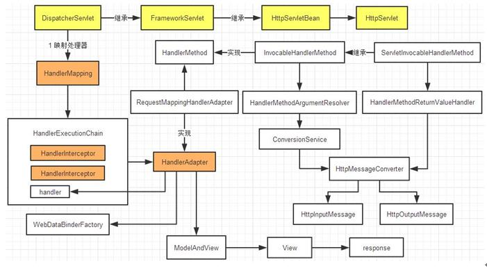
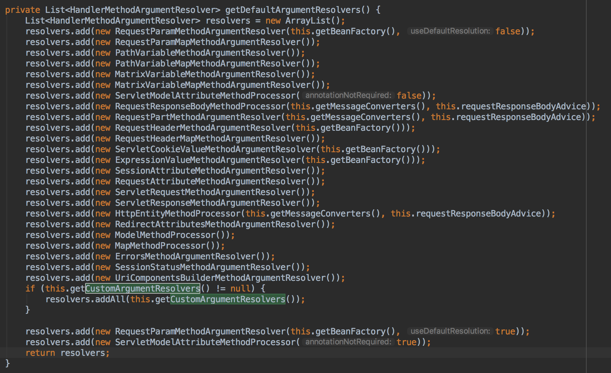
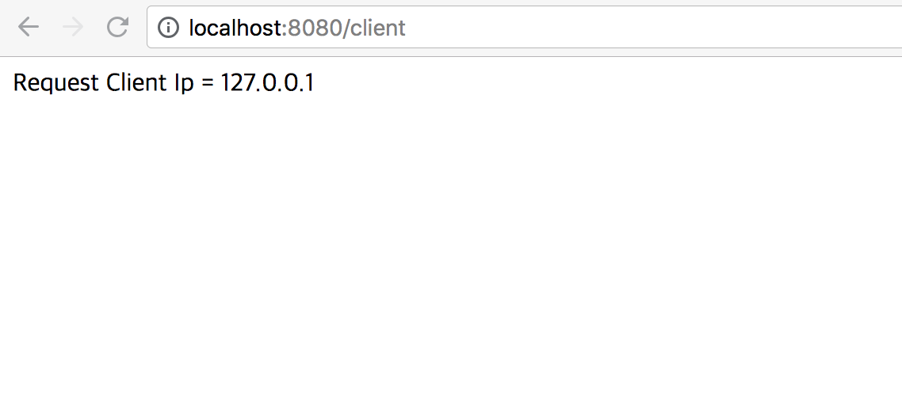

회사 업무 중에 이미 개발 된 API의 Controller에 요청을 보낸 Client의 IP 정보를 보내달라는 수정 사항이 들어 왔다. 처음에는 Javascript로 Client IP를 찾아서 Controller의 메소드의 Parameter로 보내야 하나.. 하고 생각 했지만, 적용해야 하는 부분이 여러군데 있었고, Client IP를 script로 찾기가 번거로웠다.
그러던 와중 HttpServletRequest 객체에 Client IP정도는 있지 않을까? 하는 고민을 해보았고, 바로 검색해보았다. 아니나 다를까 HttpServletRequest에서 Client IP를 구할 수 있었다.
하지만 이미 만들어진 Controller의 메소드에서 HttpServletRequest객체의 Client IP를 조회하는 소스를 중복해서 넣는 것은 번거럽고 꾀나 길었다.. (Client IP를 구하는 코드가 한 10줄 정도는 된다.)
그래서 중간에 Filter나 Interceptor로 해볼까..? 하다가 Argument Resolver라는 기능을 발견하여 사용해보았다. 그에 대한 기록을 위해 포스팅을 작성한다.
Spring Argument Resolver
Spring Argument Resolver는 Controller에 들어오는 파라미터를 가공 하거나 (ex. 암호화 된 내용 복호화), 파라미터를 추가하거나 수정해야 하는 경우에 사용한다. 사실 Argument Resolver가 없어도 개발하는데 문제는 없다. Controller에서 파라미터를 가공/추가/수정 할 수 있기 때문이다. 하지만, 이러한 방식은 중복 코드를 양산하게 되며, 깔끔한 코드를 작성하기 어렵게 만든다. Spring에서 제공하는 Argument Resolver를 이용하면 Controller의 파라미터에 대한 공통 기능을 제공 할 수 있다.
Spring에서는 HandlerMethodArgumentResolver라는 인터페이스를 사용하여 개발자가 기능을 확장 할 수 있도록 해준다.
Argument Resolver 동작 방식

(중국어?로 되어있지만 이 그림이 순서도를 잘 그려둔것 같아 첨부했다.)
- Client Request 요청
- Dispatcher Servlet에서 해당 요청을 처리
- Client Request에 대한 Handler Mapping
- RequestMapping에 대한 매칭 (RequestMappingHandlerAdapter)
- Interceptor처리
Argument Resolver 처리<-- 바로 여기서 우리가 지정한 Argument Resolver 실행- Message Converter 처리
- Controller Method invoke

RequestHandlerMappingAdapter.java > getDefaultArgumentResolvers
위에서 지정 된 순서대로 Argument Resolver를 실행 한다. 메소드의 파라미터 타입, Annotation등을 이용하여 Argument Resolver에 대한 적용 여부를 결정한다. 아랫 줄 쯤에 getCustomArgumentResolvers는 개발자가 지정한 CustomArgumentResolver를 등록하여 실행 스택에 포함 되도록 해준다.
Custom Argument Resolver 만들기
내가 업무 중에 처한 상황을 바탕으로 설명을 하자면, HttpServletRequest로 부터 Client IP정보를 얻을 수 있다는 정보를 알아 냈다. (자세한건 여기에..)
기존에 있던 Controller에서 바로 clientIp를 파라미터로 받아서 처리 할 수 있도록 해 볼 예정이다.
Custom Argument Resolver를 만들기 위해서는 HandlerMethodArgumentResolver 인터페이스를 구현하여 만든다.
1
2
3
4
5
6
7
8
9
10
11
12
13
14
15
16
17
18
19
20
21
22
23
24
25
26
27
28
29
30
31
32
33
34
35
36
37
38
39
40
41
42
43
44
45
46
47
48
49
50
51
52
53
54
55
56
57
58
59package com.example.springstudy.resolver;
import com.example.springstudy.annotation.ClientIP;
import org.springframework.core.MethodParameter;
import org.springframework.util.StringUtils;
import org.springframework.web.bind.support.WebDataBinderFactory;
import org.springframework.web.context.request.NativeWebRequest;
import org.springframework.web.method.support.HandlerMethodArgumentResolver;
import org.springframework.web.method.support.ModelAndViewContainer;
import javax.servlet.http.HttpServletRequest;
public class ClientIpArgumentResolver implements HandlerMethodArgumentResolver {
/**
* resolveArgument를 실행 할 수 있는 method인지 판별
* @param methodParameter
* @return
*/
public boolean supportsParameter(MethodParameter methodParameter) {
//@ClientIP 어노테이션이 붙은 파라미터에 대해 적용
return methodParameter.hasParameterAnnotation(ClientIP.class);
}
/**
* Method parameter에 대한 Argument Resovler로직 처리
* @param methodParameter
* @param modelAndViewContainer
* @param nativeWebRequest
* @param webDataBinderFactory
* @return
* @throws Exception
*/
public Object resolveArgument(MethodParameter methodParameter, ModelAndViewContainer modelAndViewContainer,NativeWebRequest nativeWebRequest, WebDataBinderFactory webDataBinderFactory) throws Exception {
HttpServletRequest request = (HttpServletRequest) nativeWebRequest.getNativeRequest();
String clientIp = request.getHeader("X-Forwarded-For");
if (StringUtils.isEmpty(clientIp)|| "unknown".equalsIgnoreCase(clientIp)) {
clientIp = request.getHeader("Proxy-Client-IP");
}
if (StringUtils.isEmpty(clientIp) || "unknown".equalsIgnoreCase(clientIp)) {
clientIp = request.getHeader("WL-Proxy-Client-IP");
}
if (StringUtils.isEmpty(clientIp) || "unknown".equalsIgnoreCase(clientIp)) {
clientIp = request.getHeader("HTTP_CLIENT_IP");
}
if (StringUtils.isEmpty(clientIp) || "unknown".equalsIgnoreCase(clientIp)) {
clientIp = request.getHeader("HTTP_X_FORWARDED_FOR");
}
if (StringUtils.isEmpty(clientIp) || "unknown".equalsIgnoreCase(clientIp)) {
clientIp = request.getRemoteAddr();
}
return clientIp;
}
}
HandlerMethodArgumentResolver에서는 두 가지 메소드를 구현하도록 되어있다.
- supportsParameter : 호출 되는 Controller의 파라미터를 검사하여 CustomArgumentResolver의 로직을 수행 할 지를 검사한다. (예시에서는 @ClientIP가 선언 된 파라미터만 ArgumentResolver를 적용하도록 하였다.)
- 물론 파라미터 타입이나, 특수한 규칙에 의해 ArgumentResolver를 적용할 파라미터를 필터링 할 수 있다.
- resolveArgument : supportsParameter가 true인 파라미터에 대해 어떤 값을 넣어줄 것인지에 대한 로직을 수행한다.
Custom Argument Resolver 등록하기
개발자가 목적을 가지고 만든 Custom Argument Resolver를 등록하는 방식은 2가지가 있다.
전통적인 ServletContext.xml에 등록하는 방법과 Java Config를 이용하여 등록하는 방법이 있다.
- ServletContext.xml 에 등록하는 방법
1
2
3
4
5<mvc:annotation-driven>
<mvc:argument-resolvers>
<bean class="com.example.springstudy.resolver.ClientIpArgumentResolver"></bean>
</mvc:argument-resolvers>
</mvc:annotation-driven>
- Java Config를 이용하는 방법
1
2
3
4
5
6
7
8
9
10
11
12
13
14
15
16
17
18
19
20
21package com.example.springstudy.config;
import com.example.springstudy.resolver.ClientIpArgumentResolver;
import org.springframework.context.annotation.Configuration;
import org.springframework.web.method.support.HandlerMethodArgumentResolver;
import org.springframework.web.servlet.config.annotation.WebMvcConfigurationSupport;
import java.util.List;
//WebMvcConfigurationSupport를 상속
//(기존에는 WebMvcConfigurerAdapter를 사용하였으나 Spring boot 2.0에서는 Deprecated 되었다.)
public class WebMvcConfig extends WebMvcConfigurationSupport {
//우리가 만든 ArgumentResolver를 추가한다.
protected void addArgumentResolvers(List<HandlerMethodArgumentResolver> argumentResolvers) {
super.addArgumentResolvers(argumentResolvers);
argumentResolvers.add(new ClientIpArgumentResolver());
}
}
Controller에 적용
1
2
3
4
5
6
7
8
9
10
11
12
13
14
15
16
17
18
19
20package com.example.springstudy.controller;
import com.example.springstudy.annotation.ClientIP;
import org.springframework.web.bind.annotation.GetMapping;
import org.springframework.web.bind.annotation.RestController;
public class ClientController {
/**
* 요청을 보낸 Client Ip를 return
* @param clientIp
* @return
*/
("/client")
public String getClientIp(@ClientIP String clientIp) {
return String.format("Request Client Ip = %s", clientIp);
}
}
Controller 메소드의 파라미터에 @ClientIP 어노테이션이 붙은 파라미터에는 ClientArgumentResolver의 로직을 수행한 데이터가 바인딩 된다.
실행 결과

참조
토비의 스프링 vol.2
http://jekalmin.tistory.com/entry/%EC%BB%A4%EC%8A%A4%ED%85%80-ArgumentResolver-%EB%93%B1%EB%A1%9D%ED%95%98%EA%B8%B0
http://zgundam.tistory.com/38
http://rstoyanchev.github.io/spring-mvc-31-update/#13